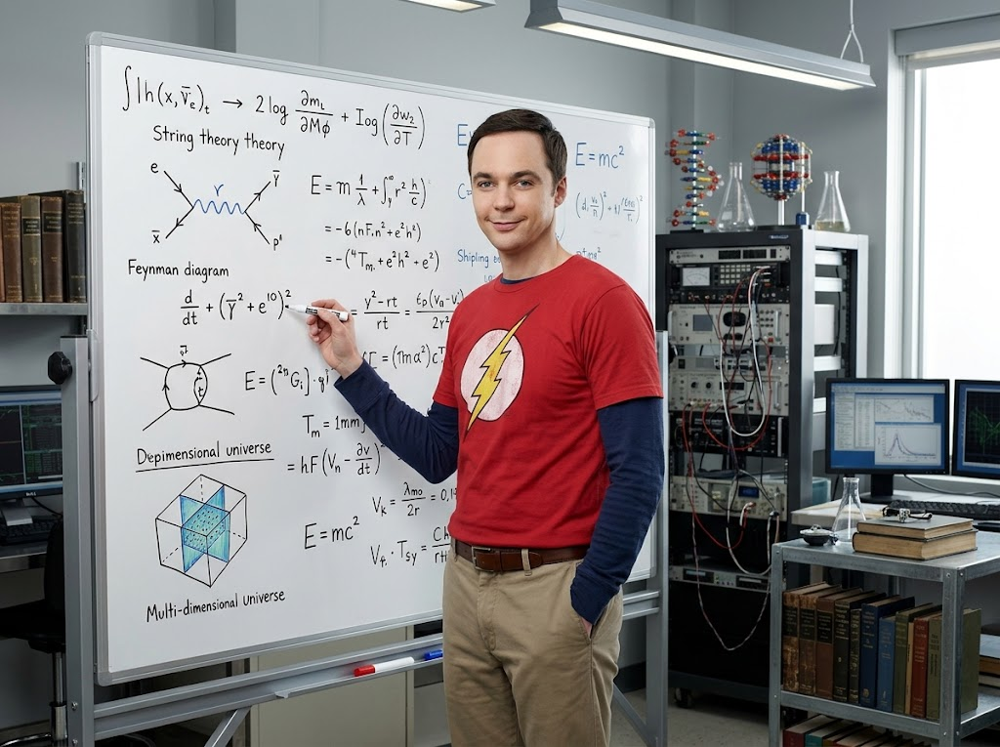
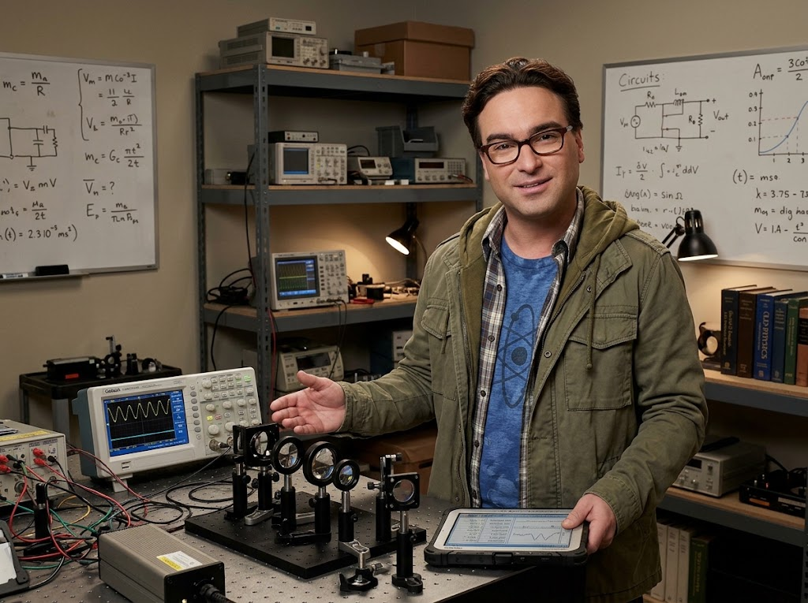
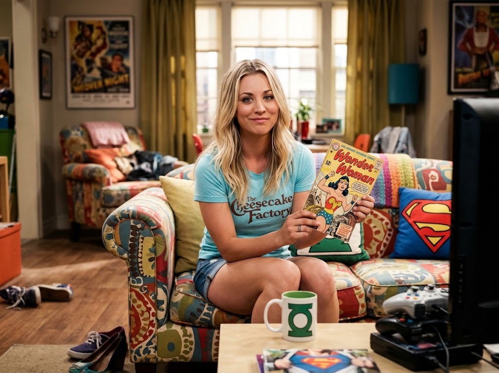
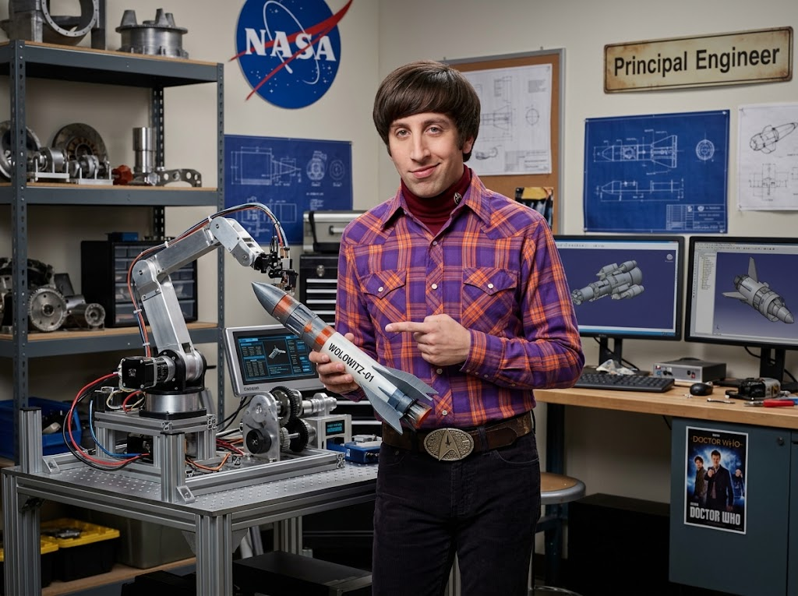
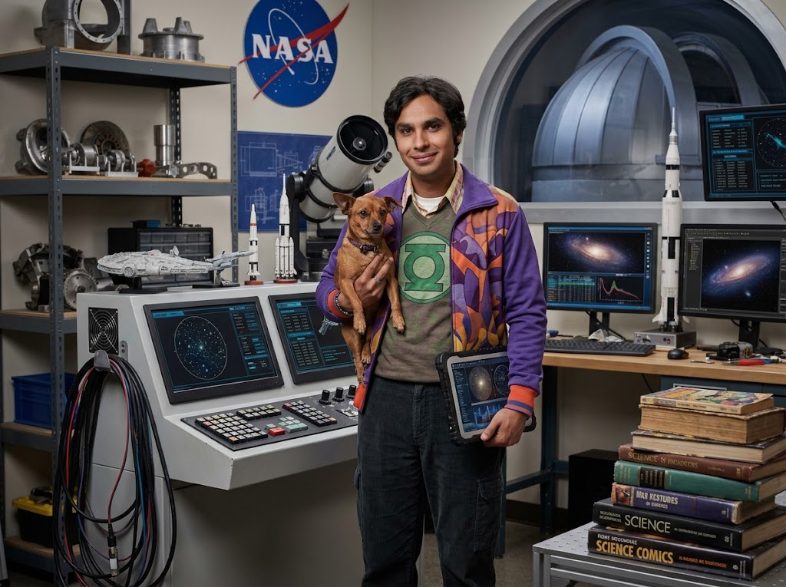

Apartamento 4A, Pasadena
Donde la física cuántica conoce a los cómics
Cuatro científicos, una vecina y un acuerdo de compañeros de piso de 31 páginas. Conocé al grupo y poné a prueba tu física.
Conocer al grupoLos sujetos de prueba
Siete personas, cuatro doctorados y una dinámica social fascinante. Deslizá para recorrerlos y abrí cada ficha.
-

Dr. Sheldon Cooper
Físico teórico
Dos doctorados, un lugar innegociable en el sofá y una teoría propia sobre el tráfico de los martes.
- Especialidad
- Teoría de cuerdas
- Manía
- Golpea la puerta tres veces. Siempre.
- Debilidad
- Los trenes a vapor
-

Dr. Leonard Hofstadter
Físico experimental
El pegamento social del grupo y la única razón por la que alguien atiende la puerta.
- Especialidad
- Física láser aplicada
- Instrumento
- Violonchelo
- Debilidad
- Intolerante a la lactosa, igual come helado
-

Penny
Actriz y representante farmacéutica
La traductora entre el apartamento 4A y el mundo real.
- Origen
- Omaha, Nebraska
- Trabajo previo
- Camarera en Cheesecake Factory
- Superpoder
- Sentido común
-

Howard Wolowitz
Ingeniero aeroespacial
El único del grupo que estuvo en el espacio, y no deja que nadie lo olvide.
- Título
- Máster del MIT, sin doctorado
- Logro
- Misión a la Estación Espacial Internacional
- Marca registrada
- Hebillas de cinturón imposibles
-

Dr. Rajesh Koothrappali
Astrofísico
Descubrió un objeto transneptuniano y llora con las comedias románticas.
- Especialidad
- Objetos del cinturón de Kuiper
- Compañera
- Cinnamon, su yorkshire
- Origen
- Nueva Delhi, India
-
Dra. Amy Farrah Fowler
Neurobióloga
Estudia el cerebro humano de día y tolera a Sheldon el resto del tiempo.
- Especialidad
- Neurobiología cognitiva
- Instrumento
- Arpa
- Dato
- Conoció a Sheldon por una app de citas
-
Dra. Bernadette Rostenkowski
Microbióloga
Manipula patógenos mortales y es, por lejos, la más temida del grupo.
- Especialidad
- Microbiología farmacéutica
- Dato
- Gana bastante más que Howard
- Advertencia
- No le levantes la voz